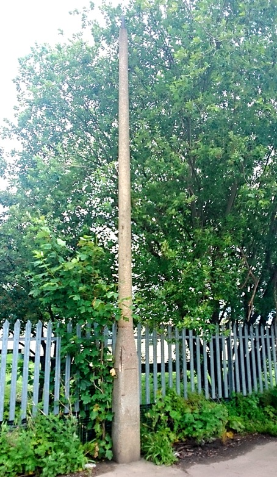
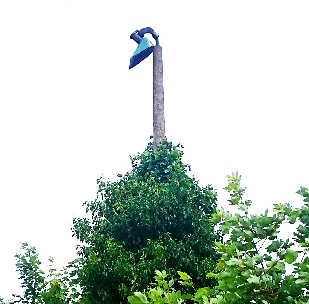
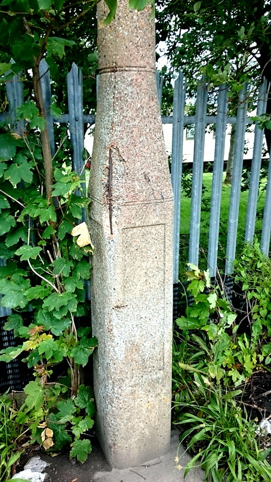
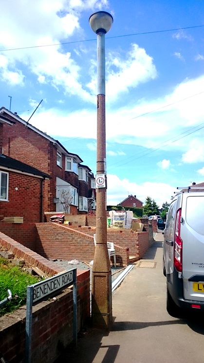
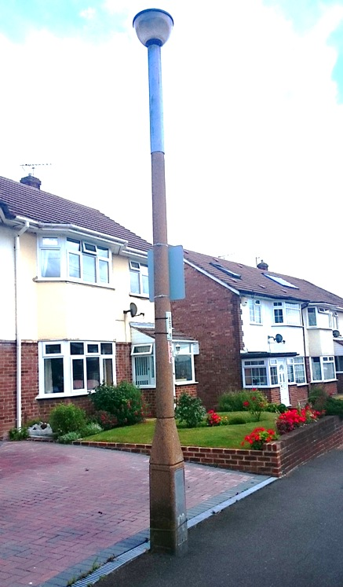
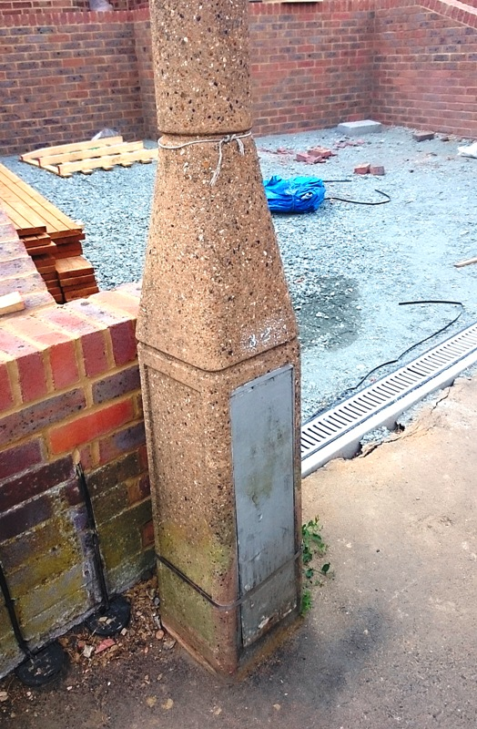
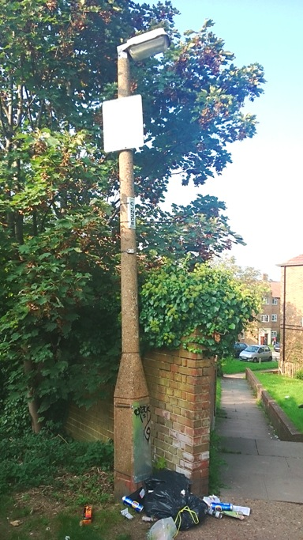

REVO concrete lamp posts
This page is about REVO concrete lamp posts. Click here for REVO metal lamp posts and lamps
Click here to go to the Beno lamp post guide homepage
1930s
In the 1930s Revo were a large lighting company who manufactured metal lamp posts and lamps. In the 30s they decided to branch out into making concrete lamp posts. This was a side line to their main business, there is not much information about their concrete lamp posts and only a few have survived to the present day.
I HAVEN'T FOUND A 30s MODEL YET
1950s
These were the only concrete lamp posts made that were round. They have an orange/red color to the concrete.
There are some abandoned ones in Leysdown (Sheppy).



There are some modernized ones in Strood.



There are some modernized ones in Borstal.

Click here to go to the Beno lamp post guide homepage